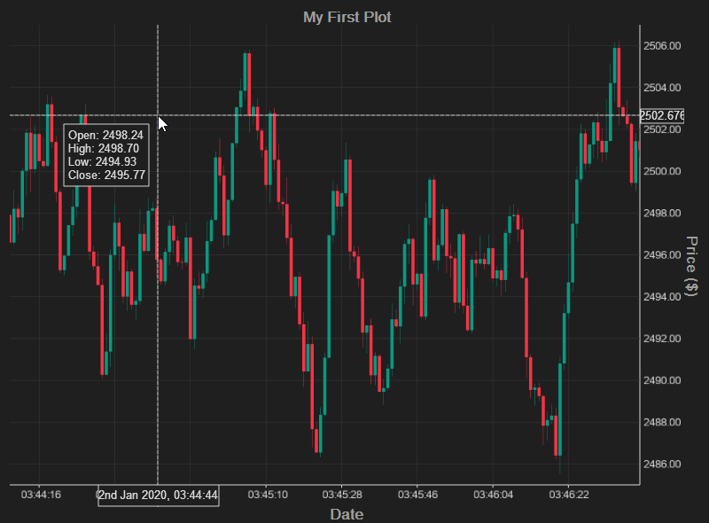
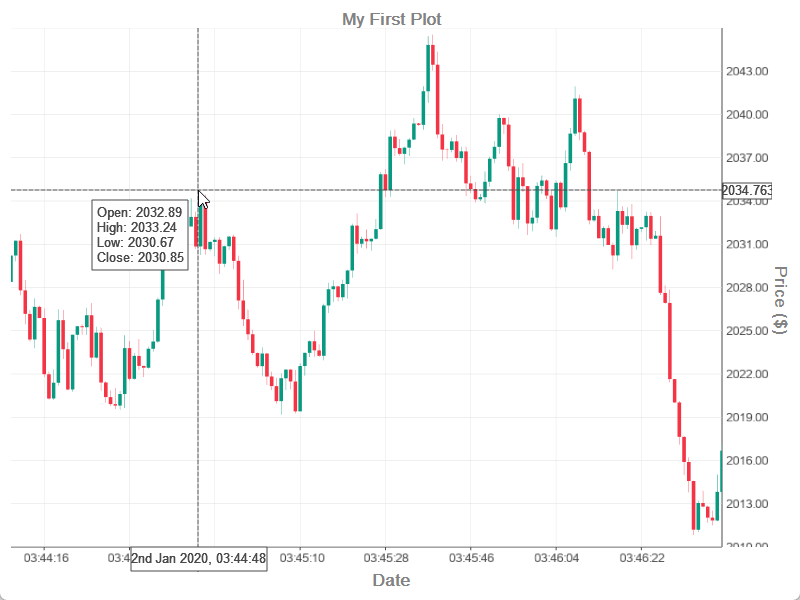

Get Started#
On this page we go through a simple, and more complex introductory example in code (Python and C++ examples). We also cover some important topics, including:
some key considerations when using the package
how to control the camera
the different ways to pass dates
options for maximising performance
In this tutorial, we will create a simple candlestick plot of prices, and a more advanced example which x-axis linked subplot including volumes.
Note in this and all tutorials, the actual data plot is arbitrary. See this example using real computed indicators.
A simple example#
In this example, we plot a simple candlestick plot. Check out the candlestick tutorial and API reference for details on all candlestick options.
 {kind=link}
{kind=link}
from rallyplot import Plotter
from rallyplot.plotter import get_toy_candlestick_data
plotter = Plotter(
color_mode="light", # "light" or "dark"
anti_aliasing_samples=8, # "0" is fastest, higher results in higher-quality images
)
open_high_low_close_df, volume, dates = get_toy_candlestick_data(N=100_000)
plotter.candlestick_from_df(
open_high_low_close_df, dates
)
plotter.set_x_label("Date")
plotter.set_y_label("Price ($)")
plotter.set_title("My First Plot")
plotter.start()
#include <Plotter.h>
#include <ToyData.h>
int main(int argc, char* argv[])
{
PlotterArgs plotArgs;
plotArgs.colorMode = ColorMode::light; // light or dark
// Set antialiasing
plotArgs.antiAliasingSamples = 8; // "0" is fastest, higher results in higher-quality images
Plotter plotter = Plotter(plotArgs);
CandleData candleData = getToyCandlestickData(100000);
// Plot a candlestick chart
plotter.candlestick(
candleData.open,
candleData.high,
candleData.low,
candleData.close,
candleData.dates
);
plotter.setXLabel("Date");
plotter.setYLabel("Price ($)");
plotter.setTitle("My Plot");
// Start the interactive plot
plotter.start();
}
A more advanced example#


from rallyplot import Plotter
from rallyplot.plotter import get_toy_candlestick_data
plotter = Plotter(
color_mode="light", # "light" or "dark"
anti_aliasing_samples=8, # "0" is fastest, higher results in higher-quality images
)
open_high_low_close_df, volume, dates = get_toy_candlestick_data(N=100_000)
# Plot a candlestick chart (use plotter.candlestick to
# pass `open`, `close`, `high`, `low` arrays separately)
plotter.candlestick_from_df(
open_high_low_close_df, dates
)
# Create a new x-axis linked subplot and plot a bar plot.
# It only takes 10% of the space.
plotter.add_linked_subplot(0.10)
plotter.bar(volume)
# Set axis labels, titles and legends
plotter.set_x_label("Date")
plotter.set_y_label("Price ($)") # currently can only share 1 y-axis label
plotter.set_title("My First Plot")
plotter.set_legend(["AAPL"], linked_subplot_idx=0)
plotter.set_legend(["Volume"], linked_subplot_idx=-1)
# We can change the camera mode on a specific subplot
# if `linked_subplot_idx=None`, it will be applied to all linked subplots.
plotter.pin_y_axis(False, linked_subplot_idx=0)
plotter.set_y_limits(-20000, 20000, 0)
# Applies to all linked subplots
plotter.set_crosshair_settings(on=False)
# We can resize the space each plots takes later
plotter.resize_linked_subplots([0.77, 0.33])
# We can plot more data on any linked subplot.
# If `linked_subplot_idx` is `None` (default) then
# it will be added to the most recent linked subplot.
some_indicator = open_high_low_close_df["open"] + 25.0
plotter.line(some_indicator, linked_subplot_idx=0)
plotter.start()
#include <Plotter.h>
#include <ToyData.h>
int main(int argc, char* argv[])
{
PlotterArgs plotArgs;
plotArgs.colorMode = ColorMode::light; // light or dark
// "0" is fastest, higher results in higher-quality images
plotArgs.antiAliasingSamples = 8;
Plotter plotter = Plotter(plotArgs);
CandleData candleData = getToyCandlestickData(100000);
// Plot a candlestick chart
plotter.candlestick(
candleData.open,
candleData.high,
candleData.low,
candleData.close,
candleData.dates
);
// Create a new x-axis linked subplot and plot a bar plot.
// It only takes 10% of the space.
plotter.addLinkedSubplot(0.10);
plotter.bar(candleData.volume);
// Set axis labels, titles and legends
plotter.setLegend({"AAPL"}, std::nullopt, 0); // last argument is linkedSubplotIdx
plotter.setLegend({"Volume"}, std::nullopt, 1);
plotter.setXLabel("Date");
plotter.setYLabel("Price ($)");
plotter.setTitle("My First Plot");
// We can change the camera mode on a specific subplot
// if `linked_subplot_idx=None`, it will be applied to all linked subplots.
int linkedSubplotIdx_0 = 0;
plotter.pinYAxis(false, linkedSubplotIdx_0);
plotter.setYLimits(-20000, 20000, linkedSubplotIdx_0);
// Applies to all linked subplots
CrosshairSettings crosshairSettings{};
crosshairSettings.on = false;
plotter.setCrosshairSettings(crosshairSettings);
// We can resize the space each plots takes later
plotter.resizeLinkedSubplots({0.77, 0.33});
// We can plot more data on any linked subplot.
// If `linked_subplot_idx` is `None` (default) then
// it will be added to the most recent linked subplot.
std::vector<float> someIndicator(candleData.open.size());
for (int i = 0; i < candleData.open.size(); i++)
{
someIndicator[i] = candleData.open[i] + 25.0f;
}
plotter.line(someIndicator, std::nullopt, linkedSubplotIdx_0);
// Start the interactive plot
plotter.start();
}
Key Considerations#
If passing dates as
datetime(Python) orchrono(C++), they should be Coordinated Universal Time (UTC) to ensure accuracy in the dynamic time display. See the passing dates section for more information.All floating-point values are cast to 32-bit floats before display, due to limited support for float64 on most GPUs.
At around 10 million points, floating point inaccuracies can lead to visible offset between gridlines and the plot when zoomed in, and other rendering issues. This is due to floating-point resolution limits and becomes more pronounced as more data points are added, leading to noticeable visual distortions at around 20 million points. This is a known issue in GPU-accelerated plotting and is a key area for future improvements to the package.
start()initialises aQtevent loop, creating an interactive plot. Once the plot is closed, theplotterobject may still be used but plots will be cleared from the object. Useplotter.finish()in a Jupyter Notebook ensure the plotter is properly torn down.Only ASCII characters (code points 0–127) are allowed for any text displayed. This is due to the complexity of rendering text on the GPU.
Camera and Keyboard Controls#
The interactive plot can be controlled using the mouse or keyboard.
The mouse controls are:
Left-click: pan
Right-click: zoom
Scroll wheel: zoom x
Scroll wheel + Shift: zoom y
CTRL + right-click zoom: pin zoom to the axis-edge
and the keyboard controls are:
A/D: pan left-right
W/X: pan top-bottom
Q/E: zoom y-axis (no effect if
pin_y_axisis on)Z/C: zoom x-axis
Enter: to cycle through candlestick plot modes
CTRL+S: cycle through the plot that the value pop-up displays when in “always show” mode.
M + Right-click: Draw a straight line onto the plot.
Maximising performance#
The capability of your GPU is the primary factor which affect the speed of the plots. However, a number of settings can help improve performance:
Unpin the Y-axis By default, the Y-axis limits are pinned to the current visible data range. Removing this pin improves speed (
pin_y_axis(False)in Python,pinYAxis(false)in C++)Disable antialiasing Antialiasing is off by default. Keeping it disabled yields the fastest rendering.
Use basic line mode Use ‘basic line’ mode for
line()(andcandlestick()plots in line-mode). See here for more details.
Data copying
All data arrays to be displayed are passed by reference and are not copied
(except to GPU buffer). However, if dates are passed (either as date-time objects or strings) these
will be copied once as they are stored in a hash-table for fast indexing, but they are not copied to GPU buffer.
Under the hood, rallyplot is written in C++. When passing data from Python, numpy arrays
are passed by reference and will not be copied. However dates (lists of string or datetime)
will be copied once.
“””
Passing Dates#
There are three option for configuring the x-axis tick labels in rallyplot:
1) No dates provided (default):
The x-axis shows the data index.
2) String labels:
An array of ASCII string labels, the same length as the data being plotted.
3) Datetime labels:
An array of datetime (Python) / chrono time_point (C++) labels, the same size as the displayed
dataset. If this option is chosen, datetimes will be formatted appropriately according to
the zoom level.
Datetime / chrono dates must be in UTC.
Linked subplots
Because dates are shared across linked subplots, you only need to pass dates for one plot on a linked subplot. Passing dates to later plotting calls plots have no effect.
Scatter plots When using the scatter plot, x-axis indices to plot can be passed as integers, otherwise must be passed in the same format as the currently displayed data.